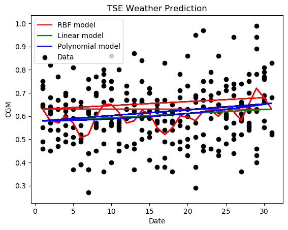

Harvest Yields is a free open source piece of software that uses machine learning to predict future crop yields.
The software includes some demo datasets to show how it works, but you can easily use your own historical data to tailor the results to your own farm.
Here is an example of the output graph. A number of models are plotted agains the predicted data to show the best time to harvest your crops.
In this example, the highest point is around day 28, thus 28 days in the future will be the optimal time to harvest.

Visit the about page to find out more, the demo page for a tutorial, or the
download page to get the software for free.